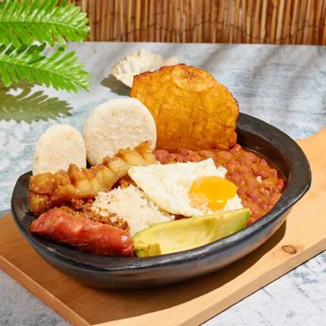
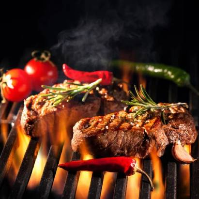
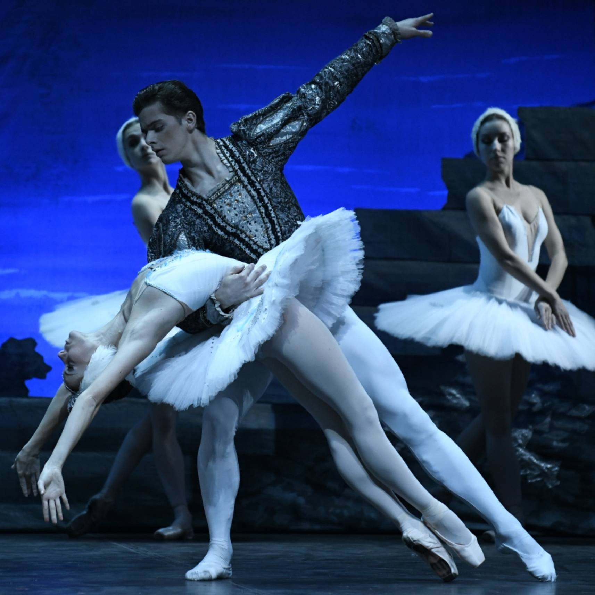

La paella catalana es un plato tradicional de arroz con sabor a mar y montaña. Se suele servir en ocasiones especiales como fiestas y celebraciones.
Pan con tomate: La sencillez deliciosa del pan crujiente frotado con tomate y aceite de oliva.
Escudella i carn d'olla: Un reconfortante cocido de invierno con carne, verduras y garbanzos.
Crema catalana: Una crema suave con una crujiente capa de azúcar caramelizado.
CULTURA
Sardana: Baile tradicional en círculo al son de música de cobla.
Castellers: Espectaculares torres humanas que desafían la gravedad y el trabajo en equipo.
Festa Major: Celebraciones populares llenas de música, baile, pasacalles y tradiciones locales.
Idioma catalán: Una lengua romance con una rica historia y literatura.
GEOGRAFÍA
: Imponentes montañas con picos nevados, lagos cristalinos y pueblos encantadores.
Costa Brava: Playas paradisíacas, calas escondidas y acantilados rocosos bañados por el Mediterráneo.
Montserrat: Macizo montañoso de origen volcánico con una famosa abadía benedictina y vistas panorámicas.
Sagrada Familia: Obra maestra inacabada de Antoni Gaudí que es símbolo de Barcelona.
COLOMBIA

GASTRONOMÍA
La gastronomía colombiana es el resultado de la fusión de alimentos, prácticas y tradiciones de tres grandes culturas: indoamericana local, española y africana.
Las arepas son el acompañante perfecto de prácticamente cualquier plato.
El café de Colombia es de los mejores souvenirs para llevar al exterior.
Cumbia: El ritmo que pone a mover las caderas al son de gaita, acordeón y maracas.
Joropo: Zapateos acrobáticos y la magia del arpa, cuatro y maracas cautivan en este baile.
Celebración del Día de Muertos: Homenaje a los ancestros con flores, velas, comida y dulces típicos.
Carnaval de Barranquilla: Un torbellino de color, música y alegría que invade las calles.
GEOGRAFÍA
Tres cordilleras: Un majestuoso abrazo de montañas: Occidental, Central y Oriental.
Biodiversidad sin igual: Un paraíso natural que alberga el 10% de las especies del mundo.
Ciudad Perdida: Un tesoro Tayrona escondido en la Sierra Nevada de Santa Marta a 2.400 msnm.
Amazonía colombiana: Un pulmón verde que alberga ríos caudalosos, exuberante selva y miles de especies.
ESTADOS UNIDOS

GASTRONOMÍA
Hamburguesas: Un ícono mundial con muchas variaciones, desde la clásica con queso hasta creaciones gourmet.
Barbacoa: Un arte culinario regional con diferentes estilos, desde las costillas ahumadas del sur hasta el pulled pork de Carolina del Norte.
Apple pie: Un postre clásico con un toque hogareño, ideal para disfrutar con helado o crema batida.
CULTURA
Hollywood: La cuna del cine, donde nacen sueños y se inmortalizan historias en la pantalla grande.
Música: Un crisol de géneros, desde el blues y el jazz hasta el hip-hop y el pop, que refleja la diversidad del país.
Parques Nacionales: Lugares majestuosos como el Gran Cañón y Yosemite, que albergan tesoros naturales y ofrecen aventuras al aire libre.
GEOGRAFÍA
Gran Cañón: Una maravilla natural tallada por el río Colorado durante millones de años.
Montañas Rocosas: Una cordillera que se extiende por el oeste del país, ofreciendo paisajes alpinos y actividades de senderismo y esquí.
Glaciares Nacionales: Un parque con lagos glaciares cristalinos, picos nevados y bosques frondosos.
Costa Azul: Playas paradisíacas, ciudades y parques en el sur de California
RUSIA
GASTRONOMÍA
Kvas: Una bebida fermentada a base de pan de centeno o remolacha, refrescante y ligeramente ácida, ideal para combatir el calor del verano.
Pelmeni: Ravioles rellenos de carne molida, perfecto para disfrutar en invierno.
Borsch: Una sopa roja vibrante a base de remolacha, col y carne.
Blini: Crepes finas hechas de masa fermentada, servidas con crema agria, mermelada o caviar, un desayuno o postre típico.

CULTURA
Balalaika: Un instrumento de tres cuerdas, similar a la mandolina, que acompaña sus canciones folclóricas.
Matryoshka: Muñecas de madera pintadas que se abren para revelar muñecas más pequeñas, un símbolo de la cultura rusa y un souvenir popular.
Metro de Moscú: Un sistema de metro no solo funcional, sino también un museo de arte e historia, con estaciones decoradas con esculturas, mosaicos y murales.
GEOGRAFÍA
Lago Baikal: El lago de agua dulce más profundo del mundo, con una belleza natural impresionante..
Montes Urales: Una cadena montañosa que marca la frontera natural entre Europa y Asia, con paisajes alpinos, bosques vastos y una gran riqueza mineral.
Península de Kamchatka: Una región volcánica activa en el Lejano Oriente, hogar de géiseres, volcanes y paisajes salvajes.
Taiga: El bosque boreal más grande del mundo, que se extiende por Siberia y alberga una gran variedad de flora y fauna.
.jpg)

.jpg)
.jpg)


.jpg)